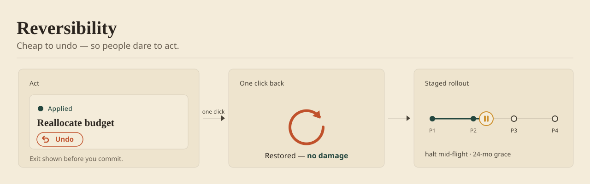

Adoption often stalls not because the model is wrong, but because acting on it feels risky. Make the action cheap to undo — one click to reverse, a clear path back, no permanent damage — and people will try the recommendation they'd otherwise ignore. Reversibility buys you the first action; accuracy keeps the rest.

Make the action one click to walk back
People don't refuse the model because they've judged it wrong; they refuse because acting feels like a commitment they can't unwind. The cure is rarely a better model — it's a cheaper undo. When reversing costs nothing, the bar to trying the suggestion drops to almost zero.
This reframes the whole adoption problem. You're not asking the user to bet that the model is right; you're asking them to try something they can instantly take back. That's a far smaller ask — and it's the one that actually gets the first action.
Try it — the pattern, live
The same live demo that runs in the book edition's field guide. Synthetic data; nothing leaves the page.
Show the way back before they commit
Reversibility only works if the person can see it before they act. An undo they discover after a mistake is reassurance arriving too late. Show the exit up front — "you can change this anytime" — so the safety is part of the decision, not a consolation afterward.
The visible path back does quiet work on confidence. It signals that the product expects people to explore, correct, and adjust — that acting on the model is a conversation, not a verdict they're stuck with.
Stage it, so you can stop it
For changes too big to undo with one click, the equivalent of reversibility is a staged rollout you can halt. Sequence the change so its effects are visible early and reversible mid-flight, and protect the people affected with a grace period rather than a hard cutover.
A migration you can stop beats a leap you can't take back. The same principle scales from a single undo button to a company-wide rollout: keep a hand on the brake, in view, the whole way down.
Implementation Checklist
- Make acting on a recommendation one click to reverse.
- Show the path back before the person commits, not after a mistake.
- For irreversible changes, stage the rollout so it can be halted mid-flight.
- Protect affected users with a grace period, not a hard cutover.
- Measure first-action rate, not just accuracy — reversibility moves the former.
Trade-offs by Approach
| Choice | Best For | Trade-off |
|---|---|---|
| One-click undo | Frequent, low-cost actions | Needs true reversal underneath, not a cosmetic toast |
| Grace window (undo for 30s) | Sends, posts, purchases | Delays the action; a window that's too short is theater |
| Staged rollout / halt | Big, systemic changes | Slower to full effect; needs progress visibility |
| Preview before commit | First-time or high-stakes acts | Adds a step; friction where trust is already high |
See This Pattern In Action
- PTC University: retiring four products, the shutdowns were sequenced so each team watched their users land softly — with a 24-month grace period, a migration you could halt.
- Programmatic Advertising Platform: a one-click override that cost nothing to walk back is what got buyers to act on the algorithm at all.
One pattern a month. The tradeoffs I paid for, plus the templates I use.
In genuinely irreversible domains — payments sent, emails delivered, trades executed — a fake undo is worse than none. Sometimes friction is the correct design; make the last step deliberately heavy instead of pretending it can be unwound.